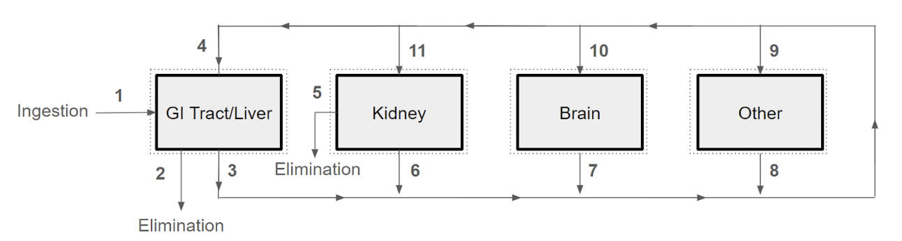
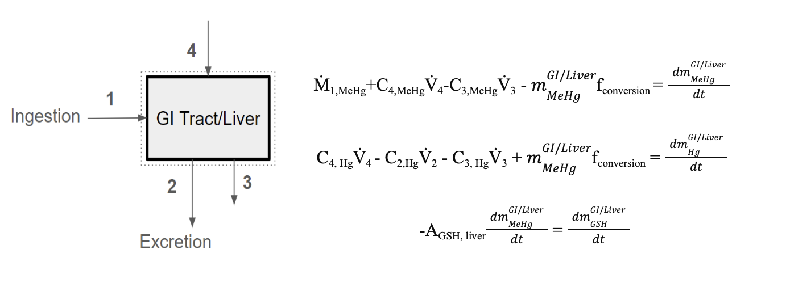
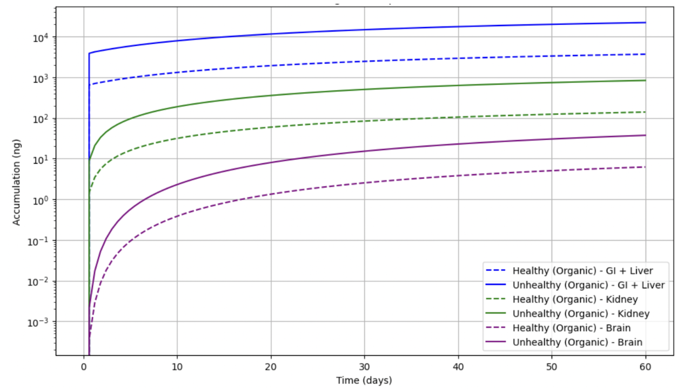

×
Mercury Project
Methylmercury (MeHg) poisoning is a pressing global threat to human health. In past global health crises, methylmercury
poisoning outbreaks have taken hundreds of lives and left millions with persistent neurodevelopmental symptoms.
The heavy metal is not only lethal in high doses, but can also cause debilitating neurological, cardiovascular, liver, and kidney damage.
Along with a team of classmates, I developed a model to monitor the mass flow rates, accumulation,
and transformation of methylmercury and its derivatives across both a healthy and unhealthy chronic 60-day dosage period. This model used a
simplified version of the most endangered organs and substantial systems of differential equations to reproduce the accumulation of
methylmercury across the human body.


